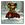

|

Tannim Murphy
Author of 12 Stories |
Rurouni Slayer
A Ranma / Buffy Crossover.
An Idea from the mind of Cute Kitsune Kaydee, Brought to you by Tannim Murphy
Chapter One Teaser
-
Buffy knew she was in trouble now. She was facing a group of vampires numbering, oh, around thirty-one. That was an estimate, mind you. This observation didn't even include the Very Large and Pissed Off Looking Demon.
"I'm dead," thought Buffy.
"You are dead now, Slayer," said the demon, obviously following the same line of thought as our heroine. "I am the Demon Lord Dra'kll. None have faced me and lived."
"Probably died because of your bad breath," taunted the Slayer. Granted, it wasn't one of her best come-backs, but she was a tad pre-occupied with thoughts on figuring out how she could come out of this fight alive.
None were forthcoming.
The self-proclaimed Demon Lord raised a massive paw and pointed at her. "Kill her," he stated simply. The vampires charged forward to do their commander's bidding.
-
It was a magnificent fight; the Slayer was in full form that day. Never before had she moved with such grace, power, speed and agility. After twenty minutes of hard fighting, she managed to defeat each and every single vampire.
Unfortunately, the Demon Lord Dra'kll still lived, while Buffy was badly wounded from the fight and could hardly move.
-
Buffy sank to the ground in pain and exhaustion after staking the last vampire.
"Okay, NOW I'm dead," thought the Slayer.
Just as the demon was about to turn her into a red smear on the sidewalk, a voice called out.
"Leave girl alone, Demon-baka."
The Demon Lord looked over and saw a young Asian man glaring defiantly at him. The demon laughed. "Do you think you can defeat the Demon Lord Dra'kll? You are merely human. Who do you think you are that could defeat the likes of me?"
"I Ranma is," said the youth. "You will pay for evil. I swore oath to hunt demons down all to ends of earth."
"You dare to threaten me?" asked the Demon Lord in an amused tone. He grinned evilly at the mortal standing before him. "Do your worst, pathetic worm."
The youth gave small shrug and simply replied, "You ask for it."
The strange boy grinned as he raised his hands and a swirl of golden energy started to form between them. Motes of light swirled and coalesced in front of his hands; first the size of a golf ball, it swiftly grew to the size of a basket ball, and finally it seemed to dwarf even the person holding back the shimmering power.
"MOKO TAKABISHA PERFECT!"
Before either the Slayer or Demon Lord could react, a huge lance of golden energy erupted from his hands and sped toward the demon, completely engulfing the creature from head to toe.
Said demon was vaporized.
"Well, that take care of that," smirked the drained youth.
Buffy noted that the young man was walking toward her. Meeting something that could vaporize a Demon Lord without breaking a sweat was not high on her 'people I want to fight' list. They were most likely some kind of demon as well, trying to get up on the demon 'executive ladder,' so to speak. No human she had encountered had that kind of power. Now, this new creature was going to gain even more prestige for killing the Legendary Slayer. Namely her. She attempted to scoot away for a moment before grimacing in pain.
The boy noticed the grimace as he kneeled next to her. In accented English, he asked, "Is you A-OK?"
Through clenched teeth Buffy replied, "No I'm not." The young man wasn't trying to kill her, so she decided she might as well go for broke. "Who are you? WHAT are you? How did you do that?"
The young man chuckled. "You first. Nice fight with vampires, even if only catch end."
Buffy snorted and said, "I'm Buffy the Vampire Slayer. The title says it all. Now, how did you do that and who or what are you?"
The youth smiled and casually replied, "Oh that was chi attack. I Ranma is, Buffy-san, wandering Martial Artist. Hunter of Demons and Other Nasty Creatures. No worry, I human is."
Buffy groaned in pain.
"Better get you to doctor. I talk about self while you hurt," said Ranma sheepishly.
"No. Take me to Giles instead," said Buffy through clenched teeth.
"What this guyels?" asked Ranma.
It took Buffy a moment to process that statement through her pain-addled mind.
"Not a what, a who; he's the only person I trust that won't try to kill me when I'm this helpless."
Ranma nodded knowingly. "Ah, know how is. Hunt by crazy martial artists no walk in park. I can trust doctors. You must be in over head."
"Oh, just the enmity of Hell. Nothing really major," muttered Buffy bitterly. She groaned as she attempted to move again.
Ranma's grin was so wide it threatened to split his face in two. "I think I find new friend to protect."
Buffy growled a bit at this. "Hey! I'm the Slayer! I'm going to do and have been doing the protecting around here!"
"How you protecting peoples while you hurt, eh?" sneered Ranma.
Buffy grumbled a bit. "I'll wipe that smirk off your face when I'm all healed."
The martial artist pointedly ignored her indignant squawks as he gently picked her up, carefully keeping in mind her most predominant injuries.
"Give directions. I get you to 'Guyels-san'," said a smirking Ranma.
The Slayer sighed slightly as she pointed down the street. "Two blocks that way, then you make a right, then four-"
"Maybe I no making self clear," interrupted Ranma. "What mean say, 'if I bird is, where I fly to Guyels-san house?'"
Buffy thought about it for a moment, then pointed through the building next to them. "That way, I think. Why?"
Ranma grinned. "Hold tight."
-
Parn growled in frustration as he crushed the Pepsi can in his fist. It had taken him forever to gather that many vampires together, and then summon a Demon, just to take out that annoying Slayer. Then this... this... upstart BOY had to come along and RUIN EVERYTHING!
Calming breaths, deep, calming breaths.
It was just another setback. One he could work around. But first, he'd need more information on whatever the hell that was that took out the Demon.
By the light of a black moon, Parn swore that meddler would pay.
He'd have to buy several cases of Mountain Dew for those late night plotting sessions.
-
"There's his house over there," stated Buffy in a slightly strained voice. The strange youth had taken care not to jostle her, but leaping about over houses like some demented frog still took their toll. The Slayer was so drained that she could hardly raise any fear at all at the way they were hopping about.
"You can't be human," the girl muttered to herself.
"Feh. You fight demons, you think so strange is?" replied a smirking Ranma.
"I don't usually kill demons. I'm the resident Vampire Slayer, not Demon Slayer," said Buffy irritably. "Demons were never in the job description."
"I guess I Demon Slayer from now on," said Ranma as he helped Buffy to the door of the house she indicated. Ranma stretched out an arm to ring the doorbell without straying too far from the Slayer.
"Yes, can I help- Oh dear," said Giles as he opened the door. Taking in at a glance Buffy's condition, he motioned toward the pair of youths. "Come in, come in. What happened to you? And who is your friend?"
Buffy groaned as she hobbled into the house with Ranma's help. "Heal first. Talk later."
"Right," mumbled Giles as he picked up the rather large first aid kit he kept near the front door.
-
Willow, Oz, Xander, and Anya had just gotten back from patrol. Willow had been patrolling with Anya, while Oz and been working with Xander. They all met back at the cemetery, at the appointed time.
"So, anything interesting happen to you guys?" asked Xander nervously as he and Oz approached the two girls.
"Nope. You?" replied an equally nervous Willow.
"Nope. And it's freaking me out. Especially since Giles gave this whole pep-talk about how there's some kinda freaky moon-thingy out and that we should encounter some weird stuff. Should we go talk to Giles?" asked Xander.
"Yeah. We should," said Oz.
-
"There there now, all better," muttered Giles as he put the finishing touches on Buffy's bandages. There were quite a number of them; ranging from the extensive wrapping over her arms, to the rather large bandage covering the majority of her head, Buffy looked like she had just been dragged behind a truck for fifty miles and thrown off a cliff at the end of it.
Luckily, the Slayer had passed out sometime during the treatment. Unluckily, this left Giles and Ranma to sort things out what exactly happened. After a moment of silence, Giles asked the first question.
"What happened?"
"Demon attack."
"A demon attacked Buffy?"
"No, vampires attack Buffy-san."
"So it was a vampire attack."
"Demon attack."
"But you said vampires attacked Buffy."
"Right. I kill demon. Buffy-san kill vampires. Demon more important, so demon attack."
Giles rubbed his forehead in irritation.
"So, could you describe exactly what the demon looked like?"
"Tall, big, mean. Look ugly, feel evil. What else need know?"
"If you could just describe perhaps the pigmentation of the skin or if there were any protrusions from the body...?" Giles let his voice trail off hopefully.
Ranma looked blankly at the older man. "You speaking Engrish?"
Giles sighed. This was getting him no where. Then again, interrogating someone just after they saved your Slayer wasn't exactly the best of protocol. He decided to switch tracks. "Perhaps you'd like a cup of tea?"
Ranma, who started out learning the English language from the different words for 'things you can eat or drink' up, nodded enthusiastically. "Got food? I starving is."
"Yes yes, quite right. I'll see what I can 'whip up,' as they say."
"As who say?"
Giles paused a moment to stare blankly at Ranma. "Right. Anyway, I'll get the food."
As he was turning toward the kitchen, Giles finally noticed exactly how Ranma's clothes looked. A red Chinese silk shirt frayed at the edges hung over a pair of black loose pants that had obviously seen better days.
In fact, judging by the dirt caked on Ranma's face, it would be a fair bet that the poor boy hadn't had a bath in days. Obviously the young man had been traveling alone for quite some time now. With the dirt on his Japanese face, Giles found it difficult to judge Ranma's age; the best he could guess was around eighteen or so.
Setting down a large turkey and ham sandwich in front of Ranma, Giles turned to grab the heated kettle. By the time he had turned back to pour the lad a spot of tea, the only thing that remained evidence a sandwich had ever been set in front of the young man was a solitary lonely crumb, and that was quickly snatched up in Ranma's obvious hunger.
"Starved indeed," muttered Giles to himself. To Ranma, he said at a louder tone, "Would you care for some more?"
"Hai! Ano, I mean, please yes."
-
As it was to naturally happen sometimes after a long night of patrol, the guys drifted away from the girls to talk about, well, guy stuff.
"Well, tonight was a good night. All organs present. All extremities attached. Wait, let me check; yes, all there. No life-or-death situations to threaten my personage. Besides the whole 'no bad guys where there should have been' thing, this was great," muttered Xander.
"At least there wasn't a full moon," said Oz.
"So, when that happens, do you have to shave, or anything?"
"I think that's a rather personal question."
Willow looked curiously at Oz and Xander talking in low tones to each other. She leaned over to Anya to ask, "What do you think they're talking about?"
Anya confidently replied, "Us! Naturally."
Xander glanced over to see Willow and Anya talking to each other.
"So, uh, what do you think the girls are talking about?"
"Us, probably," replied Oz.
-
It fascinated Giles to no end at just how much food Ranma could consume. The British man had literally emptied his refrigerator in an attempt to quell the Japanese man's hunger. In fact, it looked like he'd have to start handing Ranma whatever he had in the cupboard. Where did he keep it all?
Finally, with a small burp, Ranma had finished eating. He pushed the empty plate in front of him to show he was finished, and waved off Giles attempts to feed him more.
"Thank. I need that."
"Obviously. Now, perhaps you'd like to take a bath?" Giles dipped his head toward the bloodstains and dirt covering Ranma.
The pig-tailed man looked down as if seeing himself for the first time. "I sorry, Giles-san. Where I take bath?"
Giles waved off the apology. "It's not your fault, lad. The bath is down the hallway and to your right."
The pig-tailed man nodded gratefully toward Giles as he made his way toward the bath.
Giles turned his head toward the sleeping Buffy. "Well. This is interesting." He turned toward his collection of ancient tomes and began pulling out several of them. "Interesting indeed."
-
Xander entered the door first to find a Giles thoroughly engrossed in a book.
"Greetings, oh wise one."
Giles looked up from the text he was studying. "Oh, how did it go? Did you fare well?"
"Fare well? Who talks like that?" wondered Xander aloud.
"I'll have you know that- oh, never mind. Perhaps it was a little too British."
"Giles-san! Hot water no work!" A voice called out from the bathroom.
Giles grimaced; he had completely forgotten to get his hot water heater fixed.
"Sorry about that! You'll have to take a bath tomorrow, I suppose!" shouted Giles back.
Giles turned back to face Xander, ignoring the footsteps falling behind him.
"Oh, looks like the Giles-man has some company. Female company if I'm not mistaken." Xander gives a double-take at what appeared behind Giles. "Underage exotic female company, it looks like."
"Hello," spoke a voice directly behind Giles.
Giles looked puzzled as he turned toward the sound of the voice. "Actually he's-"
The British man stopped in mid sentence. Before him stood a buxom red- haired girl clothed in nothing but two towels in two very strategic places. One was covering the waist like it would a normal man, and another was hung over the shoulders, each end covering two very large... tracts of land.
Anya smacked Xander on the back of the head.
"What? What did I do?"
"You were looking."
"She was in front of me. Where else am I supposed to look?"
"At me, numbskull!"
"Well if you insist," replied Xander before pointedly looking directly at Anya's breasts.
"That's better," said a slightly mollified Anya.
Giles ignored the by-play going on behind him. "Er, who are you and what have you done with young Japanese boy that was here a minute ago?"
"I Ranma Saotome is. About this sorry."

|
Review this Story |